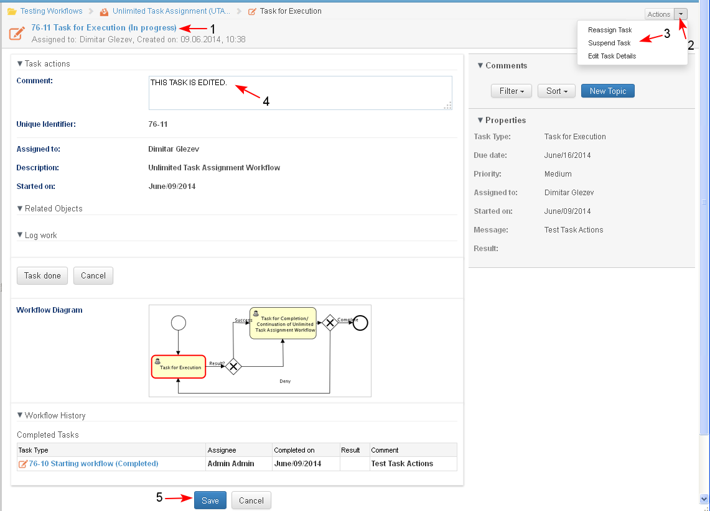

The user is able to open any tasks assigned to him/ her in every status.
A task may be opened for preview by any user who has the permissions to review the case and can therefore trace its workflows.
Preconditions
- When the assignee of a task opens an active task for preview, the task is opened in edit mode.
- Tasks in status "Stopped" or "Completed" when opened in preview mode cannot be edited and no task actions can be performed.
- Active tasks opened in preview mode by an user who is not the assignee of the task cannot be edited and no task actions can be performed.
- The overdue tasks are marked with a special sign and color to be easily distinguished from the rest.
- The assignee of an active task opens it for preview from:
- Personal Dashboard/ "My Tasks" dashlet/ by clicking on the name of the task which is a link to open it or select the action from the actions menu for that task (1-2)
- Selected Filter for tasks in Case Dashboard/ by clicking on the name of the task which is a link to open it.
- Case Dashboard/ section Tasks/ by clicking on the name of the task which is a link to open it.
- Workflow Details page/ by clicking on the name of the task in the Current Tasks.

- The system opens the selected active task in preview mode.
- The status of the task changes to "In Progress" (1).
- Depending on the type of the task, the user may enter/ change values in certain metadata fields and may perform different operations on the task (2-3).
- If the user wants to change the status of the task to "On Hold" or back to "In Progress", he/ she must do the change manually by selecting the corresponding button (Suspend Task/ Restart Task) in the list with the possible task actions (3).
- The assignee may enter a Comment (4).
- When ready with the updates the assignee clicks the button "Save" (5)

- The system saves the changes in the task details. The task remains assigned to the same user. The status of the task is set to value ("In Progress" or "On Hold"), depending on the actions of the assignee on the task (1-2).